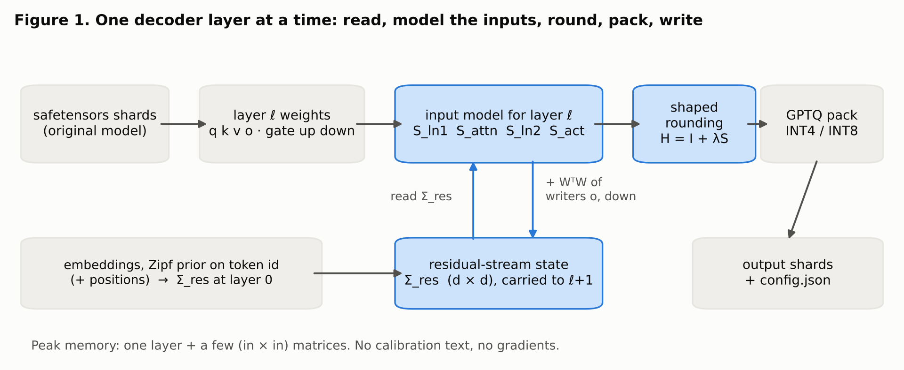
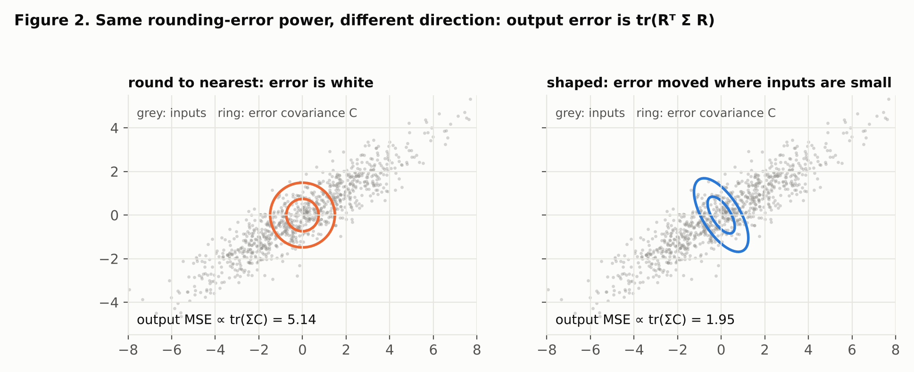
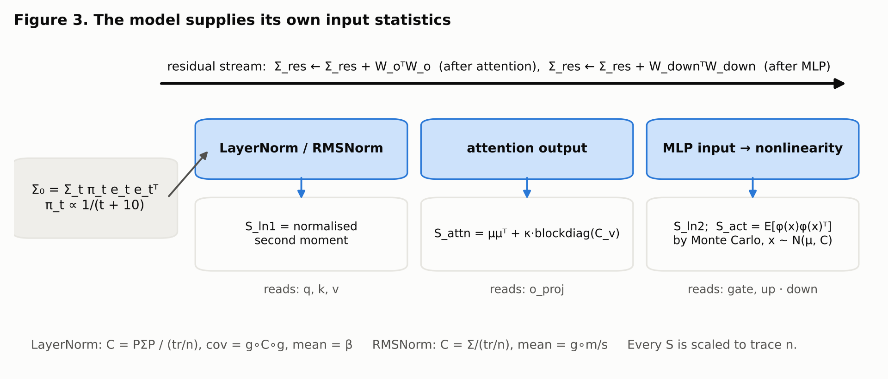
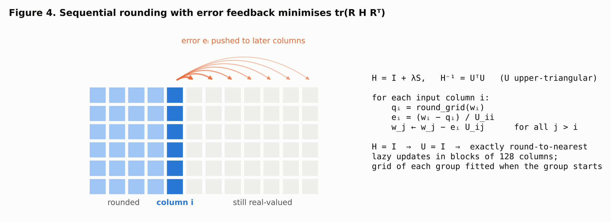
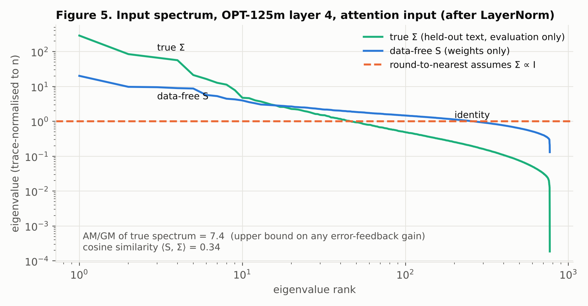
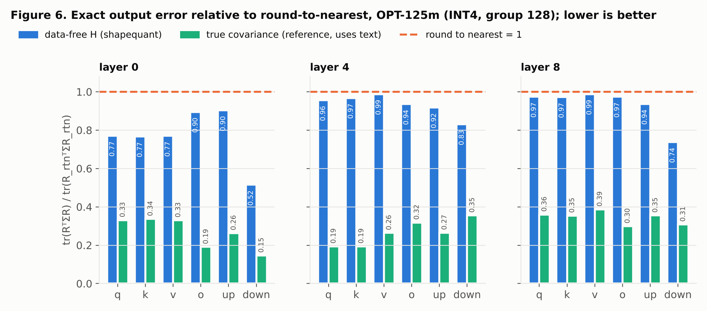
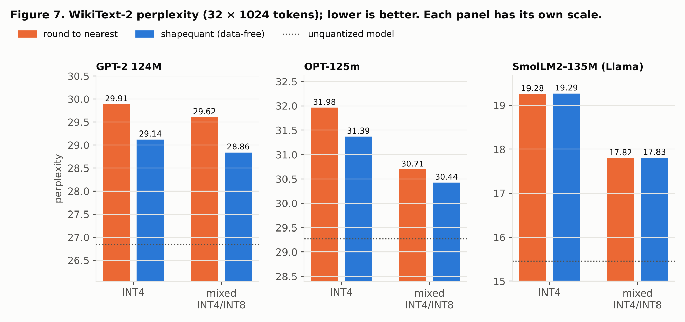
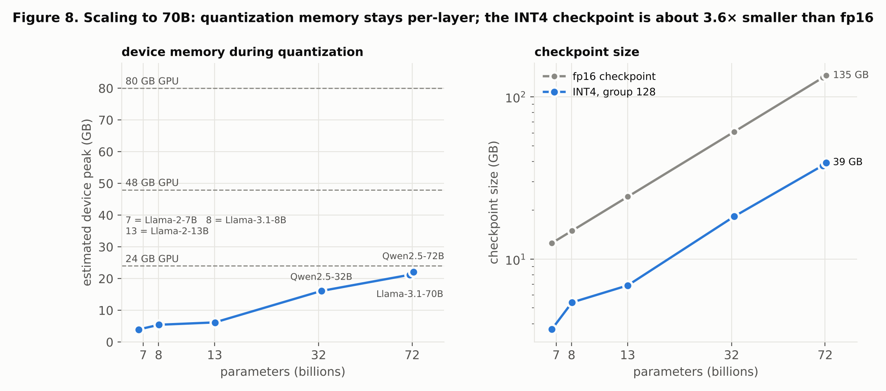

The problem
A linear block computes \(y = xW\). Quantization replaces \(W\) by \(\hat W\) on a grid. With \(R = W-\hat W\), the expected output error over inputs with second moment \(\Sigma = \mathbb{E}[x x^\top]\) is
\[ \mathbb{E}\,\lVert x R\rVert^2 \;=\; \operatorname{tr}\!\left(R^\top \Sigma\, R\right). \]Round-to-nearest (RTN) ignores \(\Sigma\). Its error is close to white, which is optimal only if \(\Sigma\propto I\). Calibration-based methods such as GPTQ estimate \(\Sigma\) from sample text. shapequant uses no text. It builds a surrogate \(S\approx\Sigma\) from the weights and the architecture, then rounds so that \(\operatorname{tr}(R^\top H R)\) is small, with
\[ H \;=\; I + \lambda S, \qquad \lambda = 1. \]The identity term makes this the minimax design against an unknown perturbation of bounded size: if \(\Sigma = S + E\) with \(0 \preceq E \preceq \rho I\), the worst case is \(S+\rho I\), and the optimal design for it is that matrix.

The model supplies its own input statistics
Every decoder input is a function of the residual stream, and the residual stream is written by the model's own matrices. That makes the second moments derivable from the weights alone.
Residual stream
Token ids of byte-level BPE vocabularies are assigned in merge order, which tracks corpus frequency. A Zipf prior on the id therefore gives the layer-0 moment from the embedding table \(e_t\) (plus learned positions \(p_s\), where present):
\[ \Sigma^{(0)} = \sum_t \pi_t\, e_t e_t^\top \;+\; \tfrac1T \sum_s p_s p_s^\top, \qquad \pi_t \propto \frac{1}{t+10}. \]Each writer into the stream (attention output \(W_o\), MLP output \(W_{\text{down}}\)) adds its contribution under an isotropic-input assumption:
\[ \Sigma^{(\ell)} \leftarrow \Sigma^{(\ell)} + W_o^\top W_o, \qquad \Sigma^{(\ell)} \leftarrow \Sigma^{(\ell)} + W_{\text{down}}^\top W_{\text{down}}. \]Normalisation layers
With gain \(g\), bias \(\beta\), centring projector \(P = I - \tfrac1n \mathbf 1\mathbf 1^\top\) and residual mean \(m\):
\[ \text{LayerNorm: } C = \frac{P\Sigma P}{\operatorname{tr}(P\Sigma P)/n},\;\; \operatorname{cov} = g\circ C\circ g,\;\; \mu = \beta \qquad \text{RMSNorm: } C = \frac{\Sigma}{\operatorname{tr}(\Sigma)/n},\;\; \mu = \frac{g\circ m}{\sqrt{\operatorname{tr}(\Sigma)/n}}. \]MLP second input
The input of the down projection is the layer's own nonlinearity applied to the normalised stream (ReLU, GELU or SiLU-gated). Its second moment is estimated by Monte Carlo from the model-implied Gaussian:
\[ S_{\text{act}} = \mathbb{E}\!\left[\varphi(x)\varphi(x)^\top\right],\quad x\sim\mathcal N(\mu,\operatorname{cov}),\quad \varphi(x) = \operatorname{silu}(xW_g)\odot(xW_u) \text{ or } \operatorname{relu}(xW_1+b_1). \]Attention output
The attention output of head \(h\) is a convex mixture of value vectors. With value mean \(\mu_v\), value covariance \(C_v\) of the head's KV group (grouped-query attention included) and concentration \(\kappa=\mathbb E\sum_t a_t^2\):
\[ S_{\text{attn}} = \mu_o\mu_o^\top + \kappa\,\operatorname{blockdiag}_h\!\big(C_v^{(g(h))}\big), \qquad \kappa = 1. \]Every \(S\) is scaled to trace \(n\), so \(\lambda=1\) means the same weight for the identity part and the model part.

Rounding with error feedback
For a fixed grid, minimising \(\operatorname{tr}(R H R^\top)\) over grid points is solved sequentially over input columns. The rounding error of each column is fed forward to the columns not yet rounded. With \(H^{-1} = U^\top U\) (\(U\) upper-triangular):
\[ q_i = \operatorname{round}_{\text{grid}}(w_i),\qquad e_i = \frac{w_i - q_i}{U_{ii}},\qquad w_j \leftarrow w_j - e_i\,U_{ij}\quad (j>i). \]With \(H = I\), \(U = I\) and this is exactly round-to-nearest. Under the high-resolution model the expected output MSE of this recursion with design \(H = LDL^\top\) is
\[ \mathbb{E} = \frac{\Delta^2}{12}\, m\,\operatorname{tr}\!\left(L^{-1}\Sigma L^{-\top}\right), \]which equals RTN's \(\tfrac{\Delta^2}{12} m\operatorname{tr}\Sigma\) at \(H = I\) and is smallest at \(H=\Sigma\). Its gain over RTN is bounded by the spectral flatness of the true input covariance:
\[ \frac{\operatorname{tr}\Sigma}{\operatorname{tr} D_\Sigma} \;\le\; \frac{\operatorname{AM}\!\left(\lambda(\Sigma)\right)}{\operatorname{GM}\!\left(\lambda(\Sigma)\right)}. \]The grid is the standard asymmetric GPTQ grid (range includes 0, integer zero-point, groups along the input). Each group's grid is fitted to the error-fed weights when the group starts. Updates are applied lazily in blocks of 128 columns. Modules that read the same input (q/k/v, gate/up) are stacked and rounded in one pass.

How good is the data-free covariance?
The two diagnostics below use held-out text only to evaluate the surrogate; the method never sees it.


Results
WikiText-2 test, 32 windows of 1024 tokens, one run per setting. The INT4 groups are 128 (GPT-2, OPT) or 64 (SmolLM2, hidden size 576). "Mixed" assigns INT4, INT8 or FP16 per module under an average budget (4.75 or 5.0 bits/weight). The modules that write linearly into the residual stream (V, attention output, MLP output) are weighted 4× in that allocation.

| model | fp16 | RTN INT4 | shaped INT4 | RTN mixed | shaped mixed |
|---|---|---|---|---|---|
| GPT-2 124M | 26.84 | 29.91 | 29.14 | 29.62 | 28.86 |
| OPT-125m | 29.27 | 31.98 | 31.39 | 30.71 | 30.44 |
| SmolLM2-135M (Llama) | 15.46 | 19.28 | 19.29 | 17.82 | 17.83 |
At standard INT4 the gains are modest: −2.6% (GPT-2), −1.9% (OPT), none on SmolLM2. The layer-level error reductions of Figure 6 only partly carry through to perplexity. In the research experiments the gains were much larger at 3 bits (−22% to −43%). 3-bit is not a standard packed format and is not exported.
Scaling to 70B
Peak device memory is about one decoder layer in fp32 plus two \(n\times n\) fp32 matrices for the widest input. For Llama-3.1-70B that input is
the 28 672-wide MLP input. The estimate below comes from the real configurations (shapequant memory).

Use
pip install -e .
shapequant memory meta-llama/Llama-3.1-70B
shapequant quantize meta-llama/Llama-3.3-70B-Instruct out70b --bits 4 --group-size 128 --device cuda
shapequant quantize HuggingFaceTB/SmolLM2-135M smol --budget 5.0 --group-size 64
shapequant eval smol --windows 32from shapequant import quantize_model, load_quantized
quantize_model("facebook/opt-125m", "opt-int4", bits=4, group_size=128)
model = load_quantized("opt-int4")Checkpoint format (GPTQ v1, as written by AutoGPTQ/GPTQModel):
qweight,qzeros(stored as \(z-1\)),scalesandg_idx, withsym=Falseanddesc_act=False.- Per-module INT8 or FP16 overrides go in
quantization_config["dynamic"]. - The bundled loader needs only torch and transformers.
Limits
- Gains: small at standard INT4, and none on the Llama-architecture model tested.
- Models tested: three small models only, one run per setting.
- 70B: no end-to-end run yet. The MLP-sized steps need about 7 GB that the test machine did not have.
- Serving: loading with GPTQModel or vLLM GPU kernels has not been tested. The format follows the GPTQ v1 layout.
- Architectures: llama, mistral, qwen2, pre-LN opt and gpt2. Gemma-style norms and MoE are not supported.